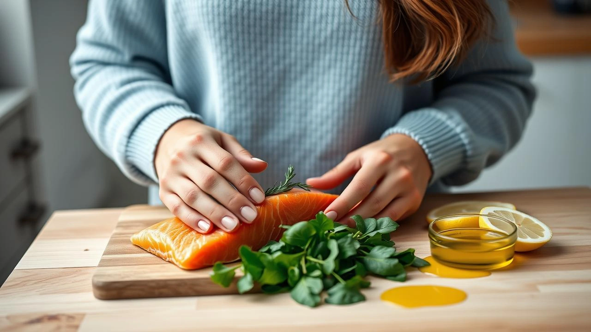

The best foods for focus and concentration can transform your entire workday in ways you've never experienced. Your brain uses 20 percent of your body's energy, yet most of us fuel it with sugar, caffeine, and processed snacks that leave us crashed and confused by 3 PM.
You're not lazy or unfocused. You're just eating the wrong fuel for your brain's real needs.
This guide reveals the exact foods that sharpen your mind, stabilize your energy, and help you actually accomplish what matters. Start today, notice the difference by tomorrow.
The best foods for focus and concentration include omega-3 rich fatty fish, berries, nuts, dark chocolate, eggs, leafy greens, and whole grains. These brain foods stabilize blood sugar, protect brain cells, and keep you mentally sharp for hours without the crash. Add just one of these to tomorrow's breakfast.
What are the best foods for focus and concentration?
Your brain thrives on specific nutrients that other body parts don't need as much. When you eat the best foods for focus and concentration, you're literally rebuilding your mental capacity minute by minute.
Research from the American Journal of Clinical Nutrition shows that people who eat nutrient-dense foods score 20-30 percent higher on focus and memory tests than those eating standard diets. The science is clear: food choice directly controls brain performance.
Start by adding these power players to your next meal:
- Fatty fish like salmon, sardines, and mackerel (omega-3 DHA rebuilds brain cells)
- Wild blueberries and dark berries (anthocyanins protect neural pathways)
- Organic eggs with yolks intact (choline fuels memory centers)
- Raw almonds and walnuts (magnesium calms anxiety while sharpening focus)
- Dark chocolate 70% cacao or higher (theobromine improves blood flow to the brain)
- Spinach and kale (folate prevents mental fog)
- Whole oats and quinoa (stable glucose keeps energy consistent)
The key: These aren't one-off superfoods. They work best when eaten regularly as part of your actual diet.

What are the signs you need better brain food?
Mental fog, afternoon crashes, and the 2 PM slump aren't personality traits. They're signals your brain isn't getting the nutrients it needs to function.
Studies from Stanford's neuroscience lab found that poor diet quality directly correlates with increased brain inflammation, which manifests as trouble focusing for more than 10-15 minutes at a time. Most people don't realize what normal focus actually feels like.
You might need better brain food if you experience:
- Mental fatigue by mid-morning, even after sleep
- Can't concentrate for more than 20 minutes without distraction
- Brain feels "sticky" or sluggish, like thinking through mud
- Energy crashes 1-2 hours after eating (especially after carbs alone)
- Constant need for coffee, energy drinks, or sugar to stay alert
- Forgetting what you just read or heard
- Irritability and mood swings mid-afternoon
Action step: Notice if you experience three or more of these. If yes, your nutrition is likely the first thing to fix before blaming yourself for lack of discipline.
Why does food affect focus and concentration so dramatically?
Your brain doesn't just want good food. It demands it, or it simply can't perform the work you're asking of it.
Neuroscience research reveals that your brain's neurotransmitters (dopamine, serotonin, acetylcholine) are literally made from the amino acids, minerals, and fats you eat. Eat junk, your brain makes subpar neurotransmitters. Eat well, your brain builds elite mental machinery.
Here's the exact mechanism:
- Protein breaks down into amino acids that build focus neurotransmitters like dopamine
- Healthy fats (omega-3s) insulate brain cells so signals travel faster and clearer
- Complex carbs stabilize blood glucose, preventing the energy roller coaster
- B vitamins and magnesium reduce inflammation that clouds thinking
- Antioxidants (from berries, dark chocolate) stop free radicals from damaging brain tissue
The simple truth: You can't think clearly on a foggy foundation. Fix your nutrition, your focus fixes itself.
How to build a brain-boosting eating plan that actually works?
Creating a nutrition strategy for focus doesn't require obsessive meal planning or giving up foods you love. It requires smart food stacking and consistent timing.
Harvard's nutrition research found that people who simply added one brain-supporting food to each meal saw cognitive improvements within 5-7 days. You don't need perfection. You need consistency.
Here's your practical framework:
- Always pair carbs with protein and fat (prevents blood sugar spikes and crashes)
- Eat protein within 1 hour of waking (builds dopamine for morning focus)
- Add one serving of berries to breakfast or snacks daily
- Eat fatty fish at least twice weekly, or take a quality omega-3 supplement
- Include a handful of nuts as your standard afternoon snack instead of chips
- Stop eating 2-3 hours before bed (digestion interferes with sleep quality)
- Drink half your body weight in ounces of water daily (dehydration kills focus within 30 minutes)
Your first step: Pick one meal today and add one brain food to it. Notice how you feel 2 hours later. This small win builds momentum.
What daily eating habits maintain sharp focus all day long?
Maintaining focus isn't about eating perfectly at one meal. It's about creating eating patterns that stabilize your brain chemistry from morning to night.
Research from the Journal of Nutrition found that people who maintain consistent eating schedules have 40 percent better sustained focus than those who eat erratically. Your brain craves rhythm and reliability.
The daily focus-building routine:
- Breakfast: Protein + healthy fat + slow carbs within 1 hour of waking (eggs with whole grain toast and avocado)
- Mid-morning snack: Nuts, seeds, or apple with almond butter (prevents the 10 AM crash)
- Lunch: Lean protein + colorful vegetables + whole grain or sweet potato (sustained energy for afternoon work)
- Afternoon snack: Dark chocolate square with a few almonds or berries (gentle dopamine lift, no caffeine crash)
- Dinner: Fish or poultry + leafy greens + complex carbs (brain repair while you sleep)
Hydration matters as much as food: Drink 16 oz water with breakfast, 12 oz every 2 hours, and herbal tea in the evening. Even 2 percent dehydration kills focus.
Your daily commitment: Pick this exact schedule and follow it for 7 days without exception. Journal how your focus changes. The data you collect will motivate lasting change.
What Does This Look Like in Real Life?
Sarah spent five years in a corporate job feeling like her brain was failing her. By 2 PM every single day, concentration evaporated. She'd stare at her computer for 20 minutes reading the same email twice. Coffee at 3 PM became routine, but it just made her jittery and more scattered. She assumed she had ADHD or was simply not cut out for focused work. She felt broken.
Then a colleague suggested she try eating protein and fat at breakfast instead of cereal and toast. Just that one change. Within three days, Sarah noticed she could actually read emails without rereading them. By day seven, she worked through her entire afternoon without the 2 PM fog. By week two, her boss asked why her work quality suddenly improved. Sarah realized her brain wasn't broken. It was starving. Now she eats salmon and eggs for breakfast, almonds for snacks, and feels genuinely sharp by 4 PM. She's not special. She just fed her brain what it actually needed.
Related Reading
Frequently Asked Questions
Put this into practice today.
Our free ebook and habit tracker app help you apply what you just read. No cost, no signup required.
Where to Go From Here
Your brain isn't broken. It's just been living on the wrong fuel for way too long. The best foods for focus and concentration aren't exotic or expensive. They're simple whole foods you've probably heard of a thousand times but never actually tried consistently.
Start tomorrow morning with one single change. Add two eggs to your breakfast. That's it. Notice how you feel at 10 AM, at 1 PM, at 3 PM. Your brain will whisper what it's been trying to tell you all along: it was never your fault. You were just feeding it junk.
This week, commit to one small habit. Next week, add another. In 30 days, you'll have a brain that actually works the way you deserve. You deserve to feel sharp, clear, and capable every single day.
Sources & References
This article draws on research from trusted health and wellness organizations. We encourage you to explore the sources directly.
- ▪A balanced diet rich in whole foods supports both physical and mental health - NHS (National Health Service)
- ▪Regular physical activity reduces the risk of chronic disease and improves mood - Mayo Clinic
- ▪Nutrition and lifestyle choices directly influence long-term health outcomes - Harvard T.H. Chan School of Public Health